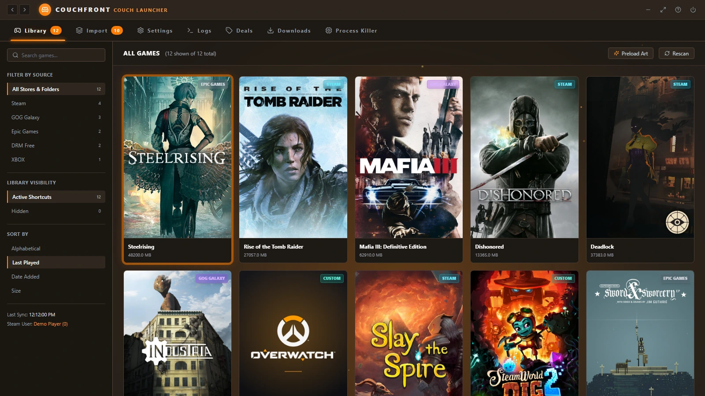
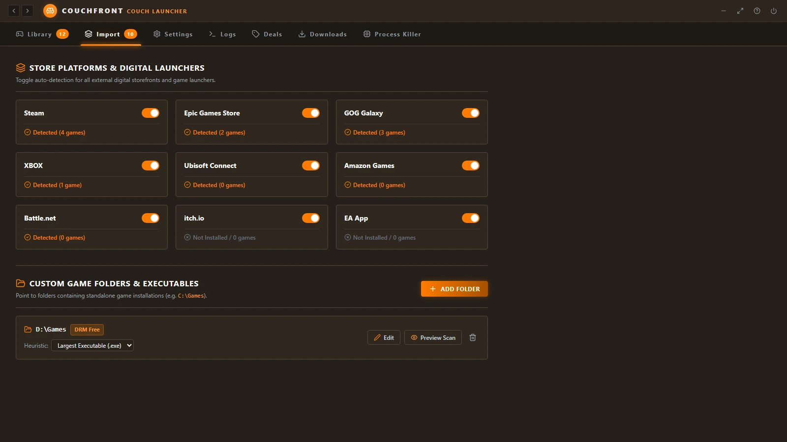
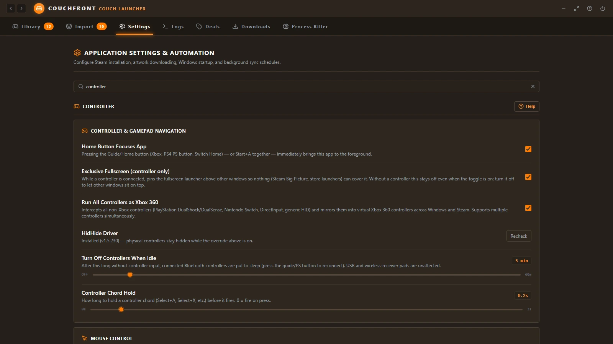
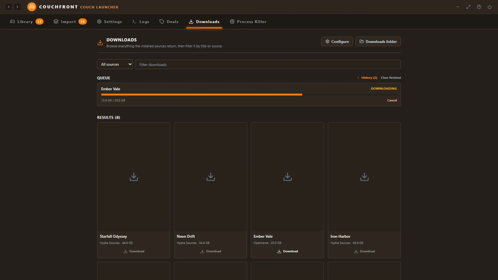
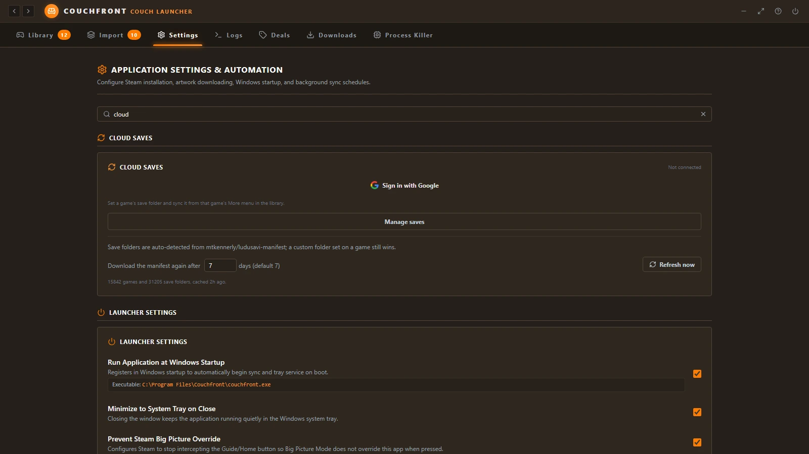
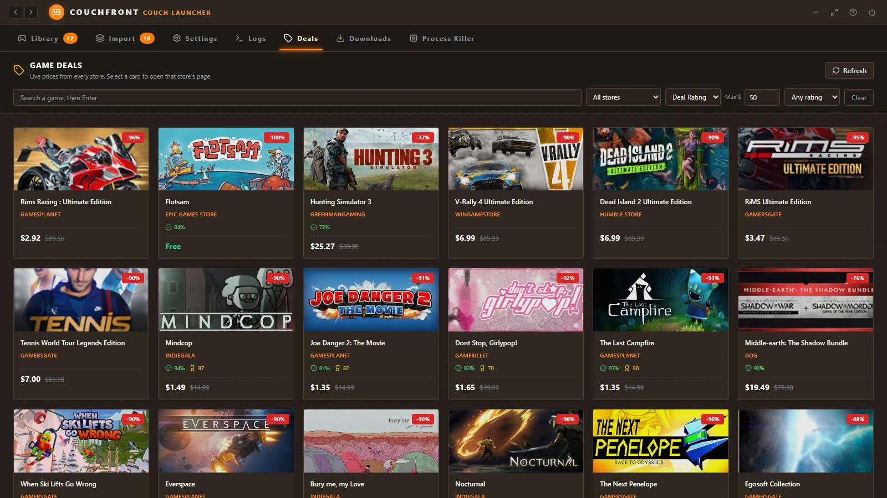
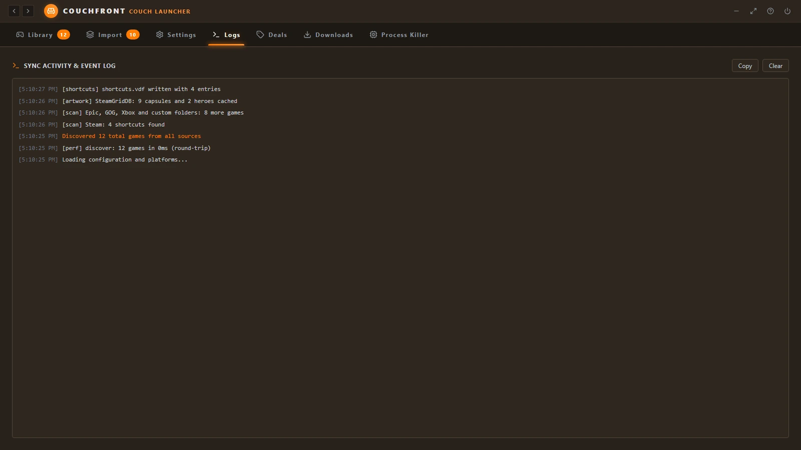

Find your installed games
Discover games from Steam, Epic, GOG, Xbox, EA, Ubisoft, Amazon, Battle.net, itch.io, and your own folders.
 COUCHFRONT
COUCHFRONT
Couchfront finds the games installed across your PC launchers, puts them in one controller-first library, and launches them without opening each store. Steam sync is optional if you still want Big Picture.
Free portable .exe · Windows 10/11 · No installer wizard
A focused launcher for turning a Windows PC into a comfortable, controller-first gaming setup, with optional speed control for single-player games.
Discover games from Steam, Epic, GOG, Xbox, EA, Ubisoft, Amazon, Battle.net, itch.io, and your own folders.
DualShock, DualSense, Switch Pro and generic HID pads are mirrored into virtual Xbox 360 controllers across Windows and Steam. Browse, launch, skip the store client, and use mouse mode without a keyboard.
Add your games to Steam as shortcuts with optional artwork, so they also show up in Big Picture. The launcher works without it.
Scan custom folders, choose the right game executable, and clean up shortcuts to games that are gone.
Add a JSON manifest for any catalogue you use, optionally route it through Real-Debrid, AllDebrid or Premiumize, and let the queue download, unpack and install them without leaving the couch.
Sign in with Google and a game's save folder is synced before launch and after you quit, auto-detected from the Ludusavi manifest. Local snapshots can be restored from the Save Manager.
Use the Windows system tray, launch on startup, and quickly return to the launcher between games. Store launchers can quit themselves when nothing is running.
Choose a theme and accent, tune your controller setup, optionally fetch library artwork from SteamGridDB, and pick an animated backdrop for the library (fireplace, emberfall, wave and more).
Let the PC sleep after idle time from the launcher, and it wakes straight back into the couch view where you left it — whatever device woke it. Idle Bluetooth pads switch themselves off, so they are not flat when you pick one up.
Hold Start for the quick menu and Select + Y for an on-screen keyboard. Button chords cover Home, mouse mode and speed control, a DualShock 4 touchpad works as a trackpad, and a physical keyboard still types into the on-screen one.
A Deals tab lists live discounts across every store it tracks, with search, store, price and rating filters.
The Process Killer lists running games by GPU use and ends a hung game's whole process tree, without opening Task Manager or losing the couch session.
Drop a manifest into the downloads plugin folder, then re-enter the Downloads tab. This example is fake: replace the URL and response paths with your own.
{
"id": "example-source",
"name": "Example Source (fake)",
"kind": "source",
"request": {
"method": "GET",
"url": "https://example.com/api/games?q={query}"
},
"response": {
"items": "results",
"title": "name",
"link": "download_url",
"size_bytes": "bytes"
}
}That URL should answer with JSON like this (dummy links):
{
"results": [
{
"name": "Fake Game One",
"download_url": "https://example.com/files/fake-game-one.zip",
"bytes": 1572864000
},
{
"name": "Fake Game Two",
"download_url": "https://example.com/files/fake-game-two.7z",
"bytes": 3145728000
}
]
}Downloads install automatically by default; turn that off with auto_install_downloads in config.json, and remove_after_install_downloads deletes the archives and extracted folders once the game is installed. When Google Drive cloud sync is on, the same manifests are mirrored there so a second PC gets your sources too.
Fast-forward and slow motion are standard in emulators. Couchfront brings them to the rest of your library. Turn on the speedhack for a running game and its clock changes without touching a single file.
Real captures from the app's own sample library. Hover or tap a numbered marker to see what that part of the app does.







Try the interactive demo No install, no files touched. Browse the real interface with a sample library.
The portable build is a single Windows application. Keep it wherever you like and launch it when you're ready to play.
Save the .exe on your Windows gaming PC.
It scans for installed games and lets you choose which libraries to use.
Optionally sync shortcuts to Steam, then browse and launch with your controller.
More on the idea, the Steam gap, and how this compares with Playnite and Steam Big Picture.
Get the latest portable build for Windows.